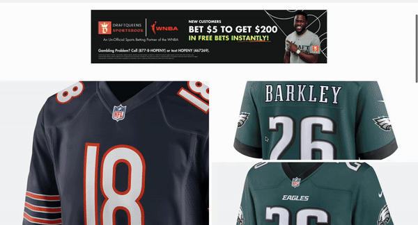

Works

Fanswap
Inspired by Fanatics, a sports merchandise e-commerce app. Users create an account, browse products by category or name, leave ratings and reviews with full CRUD, and manage the products they post.
Live Site
Metastay
Solo project cloning Airbnb with a virtual reality / Metaverse twist. Backend built with Sequelize, frontend with React/Redux, supporting full CRUD for property listings with images.
Live Site
Welp
Inspired by Yelp — connects users to local businesses. Users browse by category, write/edit/delete reviews and ratings, and create and manage their own business listings.
Live Site